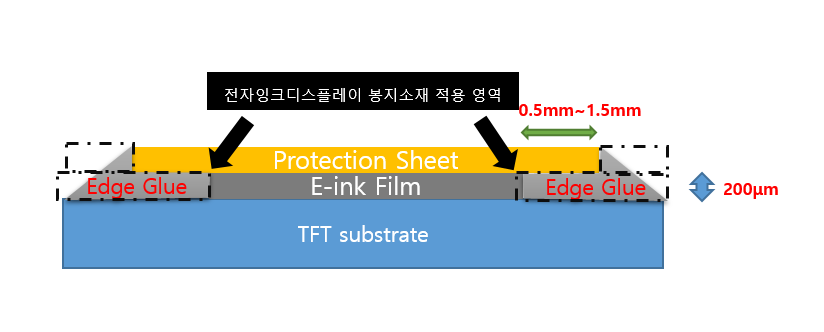
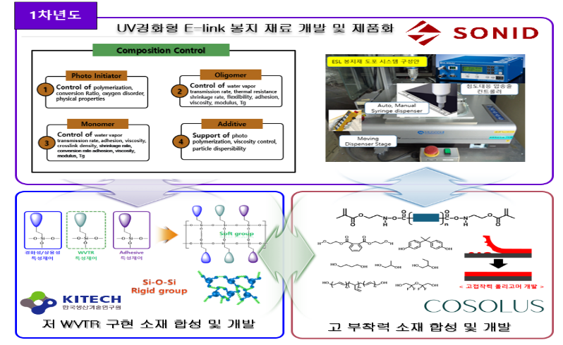
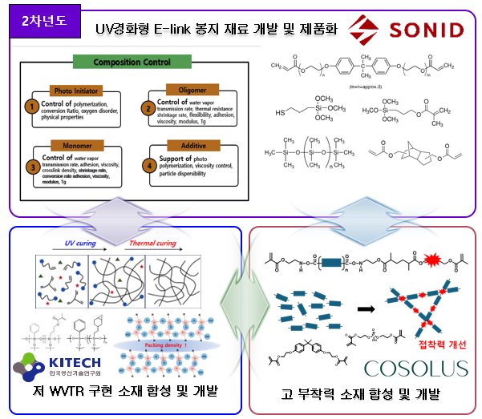
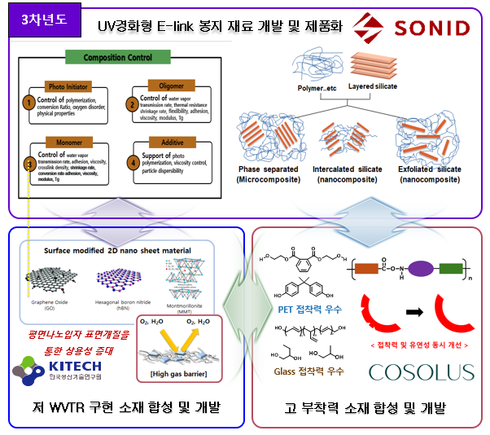
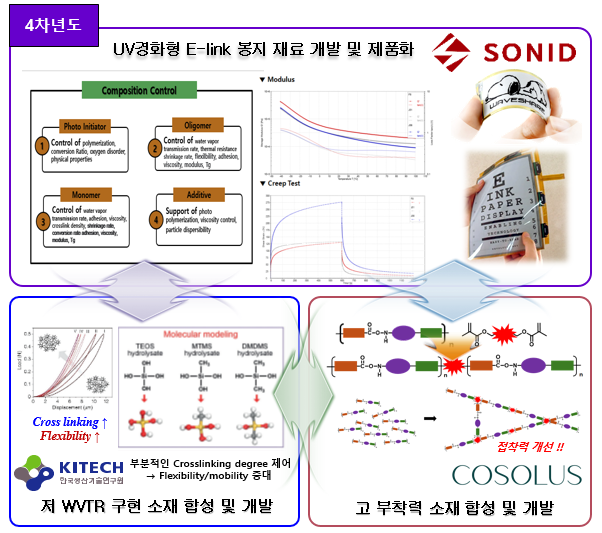
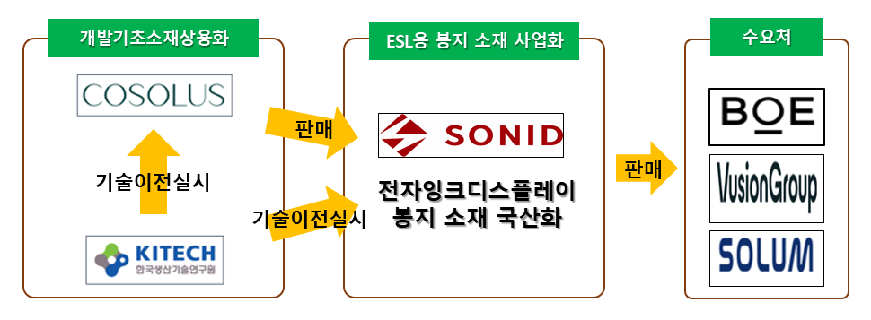

Small actions, BIG DIFFERENCE

전자잉크 디스플레이용
고기능성 UV경화형 봉지소재 개발
기술개발 지원사업 연구개발계획서 · 소니드 · 한국생산기술연구원 · 코솔러스
We promise tomorrow
CONTENTS
목차
01
과제 개요 · 컨소시엄 구성
Slide 3–402
시장 · 기술 배경
Slide 5–803
개발 솔루션과 핵심 기술
Slide 9–1204
5개년 개발 로드맵
Slide 13–1705
경쟁력과 사업화 전략
Slide 18–1906
기대효과와 확장 계획
Slide 20–212
We promise tomorrow
OVERVIEW
과제 개요
과제명
전자잉크 디스플레이용 고기능성 UV경화형 봉지소재 개발
개발 대상
E-Ink 표시소자 가장자리에 적용되는 단일층 UV경화형 봉지소재
개발 목적
공정 TACT 단축과 열에 의한 기판 Warpage 개선
주관기관
소니드 주식회사
공동 연구기관
한국생산기술연구원, ㈜코솔러스
핵심 성능
저투습고접착저수축높은 경화율장기 신뢰성
최종 단계 — 200kg 규모 양산 검증과 고객사 적용
3
We promise tomorrow
OVERVIEW
컨소시엄 구성 및 보유역량
소니드 주식회사 (주관기관)
- 디스플레이 전문 소재 기업, 국내외 디스플레이 제조업체 협력업체 등록 · 제품판매 및 공동개발 수행
- 총괄책임자: 디스플레이 소재 개발 분야 LCD~OLED~Micro-LED 20년 이상 개발경력, 관련 특허 100편 이상 보유
한국생산기술연구원
- 유무기 하이브리드소재 분야 SCI(E) 논문 44편(인용 562회, h-index 15)
- 국내 특허등록 26건 이상, 실록산코팅소재 관련 해외특허 2건
- 한국공업화학회 국제협력이사(2019–2023) · 산학연협력이사(2024~현재)
㈜코솔러스
- 올리고머 합성, 화학구조 기반 배합물 설계 및 제조 기술 전문 기업
4
We promise tomorrow
BACKGROUND
시장 및 산업 배경
ESL 확대 배경
- 대규모 상품·재고 관리
- 가격 변경 및 재고관리 자동화
- POS 연동 기반 실시간 운영
- 매장 효율성과 경쟁력 강화

클라우드 기반 ESL 매장 운영 개념도
글로벌 시장 전망
1.6조원
2023년
→
4.3조원
2028년 전망(약 2.7배)
연평균성장률(CAGR) 15~17%

출처: Research and Markets
클라우드 기반 매장 운영 자동화 → 글로벌 ESL 수요 확대
5
We promise tomorrow
BACKGROUND
제품 적용 구조

전자잉크디스플레이 봉지소재 적용 단면 구조 (자료출처: 소니드주식회사)
E-Ink 표시소자 가장자리(Edge Glue)에 단일층으로 적용되어 수분·열·먼지로부터 내부 소재를 보호
- 개발제품: E-Ink 디스플레이용 봉지소재
- 적용 위치: E-Ink 표시소자의 가장자리 Edge Glue
- 주요 기판: Glass·PET
- 보호 기능: 외부 수분 차단, 먼지·열 노출 방지, 기판과 봉지재 사이의 접착 유지
단일층으로 E-Ink를 보호해야 하므로 고기능성이 요구됨
6
We promise tomorrow
BACKGROUND
기존 기술의 문제
긴 경화시간
기존 봉지소재는 일정 온도·압력에서 약 1시간의 열경화가 필요
긴 경화시간으로 공정 TACT가 증가하고 생산효율이 저하됨
Warpage 발생
열경화 과정에서 기판 Warpage가 발생할 수 있음
단일층 구조에서 높은 수분차단성과 접착력을 동시에 요구
E-Ink는 수분·먼지·열에 쉽게 노출되어 봉지소재가 필수이나, 기존 열경화 방식은 위 두 한계를 동시에 안고 있음
7
We promise tomorrow
BACKGROUND
개발 필요성
국내 E-Ink 소재시장 진입 기반 확보 — 해외기업 중심의 ESL 봉지소재 시장 대응
경쟁 구도
ESL 핵심기술은 BOE·JABIL·E-Ink Holdings·Innolux 등 글로벌 기업이 보유. 봉지소재 시장은 중국·독일 기업이 주도하며 Henkel 등 진입으로 경쟁 심화
진입 장벽
국내 디스플레이 산업은 OLED·LCD·Micro-LED에 투자 집중, 국가기반기술 양극화 심화. 기술난이도·개발비용 증가로 중소기업 진입장벽 상승
기회 요인
E-Ink 디스플레이 소재는 국내기업 진출이 적은 미개척 신규 기회시장. 소니드는 선행개발 실적 기반 해외기업 대비 경쟁우위 확보 추진 중
8
We promise tomorrow
TECHNOLOGY
개발 솔루션
열경화 → UV경화형 소재로 전환하여 기존 공정의 한계를 개선
01
UV경화 전환
열경화 대비 짧은 경화시간으로 공정 TACT 단축, Warpage 저감
02
저 WVTR 소재
낮은 수분투과도(WVTR) 구현을 위한 기초소재 개발
03
고접착 소재
Glass·PET 등 난부착 기판을 위한 고접착 소재 개발
04
공정조건 최적화
UV경화 공정에 적합한 소재·점도·경화조건 최적화
적용 위치: E-Ink 표시소자 가장자리 Edge Glue · 적용 기판: Glass, PET (향후 Polyimide)
9
We promise tomorrow
TECHNOLOGY
핵심 기술 구성
UV경화형 봉지재 기술
소니드
- UV경화형 봉지재 개발(전방위적 평가) 및 고객사 유사 ESL 봉지 씰 도포 시스템 구축
- 조성물 기초물성·신뢰성 평가
- ESL Damage 및 저장안정성 검증
- 최종 봉지재 조성 최적화(점도·보관 안정성 확보)
저투습 하이브리드 고분자 기술
한국생산기술연구원
- Polysilsesquioxane 기반 고분자 설계(높은 수분차단 특성)
- 분자량·PDI·Packing·가교밀도 제어로 WVTR/접착 특성 제어
- 2D 무기 나노입자 기반 코팅소재로 광경화·Barrier·용액공정성 개선
- 내굴곡성·저투습 동시 확보 hybrid 소재 합성공정 최적화
고접착 우레탄 아크릴레이트
㈜코솔러스
- Glass·PET용 저투습/고접착 우레탄 아크릴레이트 올리고머 설계·합성
- 소수성 폴리올 2종 도입 공중합체로 투습·접착 특성 제어
- 다관능 아크릴레이트 당량 제어로 가교구조·밀도 조절
- 접착력·투습률 최적화 및 양산화(점도·분자량 안정성 확보)
10
We promise tomorrow
TECHNOLOGY
정량적 개발 목표
성능 목표
- WVTR = 5 g/m²·day
- 부착력(보호필름–Glass) = 10N/cm 이상
- 부착력(Glass–Glass) = 5N/cm² 이상
- 저온/고온 모듈러스 비율 = 10² 이내
- 수축률 = 5% 이하
- 경화율 = 95% 이상
신뢰성 · 양산 목표
- EPD module warpage(2.66" 기준) = 0.3mm 이하
- 고온/고온고습 조건 = 1,000hr pass
- 열충격안정성 = 200cycle pass
- 양산성(소재): 점도·분자량 오차 ±5%
- 양산성(제품): 점도 오차 ±5%, 보관안정성 6개월
정량적 성과 목표
- 해외특허 출원 3건
- 국내특허 출원 10건
- SCI 논문 4건
- 청년의무고용 3명
- 연계고용 5명
11
We promise tomorrow
TECHNOLOGY
기관별 역할 및 협력 흐름
생기원·코솔러스 소재 개발 → 소니드 조성물 적용·신뢰성 평가 → 코솔러스 스케일업·공급 → 소니드 최종제품 양산·판매
생기원 · 코솔러스
소재 개발
→
소니드
조성물 적용
신뢰성 평가
신뢰성 평가
→
코솔러스
스케일업 · 공급
→
소니드
최종제품
양산 · 판매
양산 · 판매
| 기관 | 주요 역할 |
|---|---|
| 소니드 | UV경화형 ESL 봉지재 조성·도포, 공동개발 소재 평가, 신뢰성 검증, 최종제품 양산 및 판매 |
| 한국생산기술연구원 | 저투습 PSQ 기반 하이브리드 고분자 설계·합성, Barrier·유연성·가교 특성 최적화 |
| 코솔러스 | Glass·PET용 고접착 우레탄 아크릴레이트 올리고머 개발, 스케일업 및 양산기술 확보 |
12
We promise tomorrow
ROADMAP
5개년 개발 로드맵 — 1차년도

선행개발 기반 UV경화형 봉지재 개발 착수와 3개 기관 기초소재 설계
소니드
- 선행개발 기반 UV경화형 봉지재 개발 및 신뢰성 평가
- 장비 개조로 고객사 유사 ESL 봉지 씰 도포 시스템 구축
- 해외특허 확보 IP-R&D 수행
한국생산기술연구원
- PSQ 고분자 분자 설계 및 합성(고수분차단 특성)
- Acrylate·기능성 실란 공중합으로 분자량/WVTR·접착 특성 제어
㈜코솔러스
- 단일 폴리올 기반 저투습/고접착 올리고머 개발
- Glass·PET용 폴리올·이소시아네이트·아크릴레이트 기반 설계·합성
- 소수성 폴리올 활용 접착력 제어
13
We promise tomorrow
ROADMAP
5개년 개발 로드맵 — 2차년도

가교구조 형성과 dual-curing 도입으로 접착력·투습 특성 고도화
소니드
- 1차년도 도포 장비 활용 봉지 씰 개발·신뢰성 평가
- 고객사 ESL셀 기반 재료별 Damage 경향성 확인
- 고부착력 저WVTR 조성물 개발
한국생산기술연구원
- 저투습 Packing/crosslinking 코팅소재 개발
- 1·2차 결합 병용으로 packing density 제어
- Dual-curing(UV+열경화) 시스템 도입
㈜코솔러스
- 다관능 아크릴레이트로 3차원 가교구조 형성
- 가교밀도 조절에 따른 투습율·부착력 변화 관측
- 평가 결과 기반 올리고머 소니드 제시
14
We promise tomorrow
ROADMAP
5개년 개발 로드맵 — 3차년도

첨가제·2D 나노 필러 적용으로 성능 신뢰성 재현성 확보
소니드
- 무기입자·왁스 등 첨가제 적용 및 평가
- 신뢰성·저장안정성 재현성 평가 및 개선
- 공동개발 재료를 2월 간격 공급받아 기초물성 평가
한국생산기술연구원
- 2D 나노 평면 무기입자 기반 코팅소재 개발
- 판상형 filler 도입, 광경화·barrier·용액공정성 평가
- Filler 분산성 확보 위한 resin 개질
㈜코솔러스
- 폴리올 2종 도입 공중합체 설계
- 단일·다단계 반응을 통한 공중합체 합성
- 투습율·부착력 평가 후 소니드 제시
15
We promise tomorrow
ROADMAP
5개년 개발 로드맵 — 4차년도

E-paper Flexible 시장 대응 — Polyimide 기판 적용과 내굴곡 특성 확보
소니드
- E-paper Flexible 시장 대응 UV경화형 봉지재 개발
- Polyimide 기판 적용 UV경화형 부착력 증진 평가
- 신규특허 확보 위한 핵심기술 차별화 방안 검증
한국생산기술연구원
- 내굴곡/저투습 특성의 PSQ 기반 코팅소재 개발
- Dimethoxydimethylsilane 도입으로 crosslinking–유연성 trade-off 제어
㈜코솔러스
- 가교첨가제 도입으로 3차원 가교구조 형성
- 당량 제어를 통한 접착력·투습도 최적화
16
We promise tomorrow
ROADMAP
5개년 개발 로드맵 — 5차년도
200kg
양산 규모 신뢰성 평가 — 5개년 로드맵의 최종 목표
최종 조성물 확정과 200kg 양산 규모 신뢰성 평가로 사업화 완성
소니드
- 최종 조성물 선정, 200kg 양산 규모 신뢰성 평가(점도·보관 안정성)
한국생산기술연구원
- hybrid 소재 합성공정·특성 최적화
- UV경화 공정 맞춤 경화제/점도 포뮬레이션 최적화
- Lab 1~2kg 배치 최적화 후 코솔러스 기술이전
㈜코솔러스
- 우레탄 아크릴레이트 올리고머 양산화 기술 확보(점도·분자량 안정성)
- 파일럿 및 양산 합성기 설계·제작
17
We promise tomorrow
COMPETITIVENESS
선행개발 실적 및 보유 경쟁력
고객사 평가 경험과 세 기관의 소재·합성·양산 역량을 기반으로 상용화 가능성을 확보
선행개발 실적
- 2023년 대만 고객사향 1차 평가제품 5종, Edge Mura 개선제품 6종 추가 발송으로 UV경화형 제품 개발 수요 확인
- 소니드·경쟁업체 공동평가 결과 60℃·240시간 수준 확인(목표 1,000시간 대비 미달), 일본 제품과 큰 차이 없음
- 생기원·코솔러스와 WVTR·접착력 개선 소재를 선행개발했으나 최종 최적화에는 도달하지 못함
소니드
- 디스플레이 전자재료 개발·양산 및 고객사 평가 경험
- UV경화형 디스플레이 재료 공동연구개발 중점 수행
한국생산기술연구원
- SCI(E) 논문 44편, 국내특허 26건 이상, 해외특허 2건
- 스트레처블 커버윈도우 소재, 차량용 OCA 등 대표과제 수행
코솔러스
- 올리고머·시럽·첨가제 설계 합성기술, 20~50L/5톤 합성기 운용 경험
- 기능성 수지 사업화, 2023년 매출 5.2억원 달성
18
We promise tomorrow
BUSINESS
사업화 전략

생기원 개발소재 → 코솔러스 기술이전·스케일업 → 소니드 양산·판매
3차년도(2026년) 고객사 신뢰성 평가 승인 목표, 과제 종료 시점인 2028년부터 매출 발생 추진
단계별 판매 확대 전략
- 1차: 현재 평가 중인 대만 글로벌 선두 수요기업 우선 납품
- 2차: 기존 열경화 봉지재 대체 또는 신규 모델 적용 납품
- 3차: 이후 국내 ESL 생산업체로 공급처 확대
추진 현황 및 계획
- 대만 수요기업과 NDA 체결, 24년 1월 7종 평가결과 공유·3월 6종 샘플 발송
- ESL 외 사업화 아이템도 병행 개발하며 사업영역 확장 추진 중
- 국내외 ESL 업체 판매처 다양화, E-book·Signage 마케팅 및 IP 확보·핵심기술 차별화 병행 추진
19
We promise tomorrow
BUSINESS
기대효과 및 확장 계획
기대효과
100억원+
글로벌 선두기업 적용 시
신규 해외매출 기대
신규 해외매출 기대
200억원
2030년경 ESL 봉지소재
국내외 매출 목표
국내외 매출 목표
- 국내 글로벌 2위 기업 대상 프로모션으로 국내매출 확대 추진
- 소매 판매업 인건비 절감 등 매장 자동화 효율화 기여
- 해외기업 중심 ESL 봉지소재 시장에서 국내기업 경쟁 기반 확보
확장 계획
- 대만 SES-imagotag 외 국내외 ESL 기업으로 판매처 다변화(국내 솔루엠, 해외 Price 등 협력)
- ESL 외 전자종이 응용제품(E-Book, Signage)으로 소재 적용 확대
- E-Ink 원천기술·Protection Film·신규 전자종이 소재기업과 협력 추진
- Flexible E-Paper용 Polyimide 기판 적용기술 확보
- 확보 기술을 OLED 대형 디스플레이용 봉지소재로 확장
20
Small actions, BIG DIFFERENCE
COSOLUS, small actions, BIG DIFFERENCE
전자잉크 디스플레이용 UV경화형 봉지소재로 ESL 시장의 새로운 표준을 제시합니다
소니드 주식회사 · 한국생산기술연구원 · ㈜코솔러스